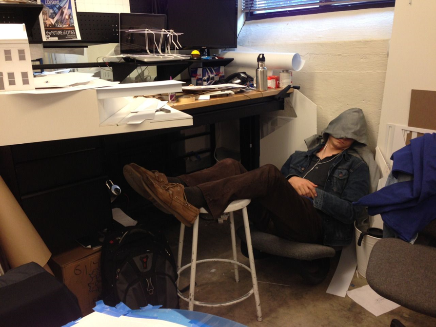

Snění
Sen je prožitek smyslových vjemů, emocí a myšlenek
Převážná většina snů se odehrává v průběhu REM fázi
spánku
Perioda REM spánku se u zdravého člověka objevuje
nejméně třikrát za noc.
Valnou část z nich zapomeneme těsně po probuzení.
